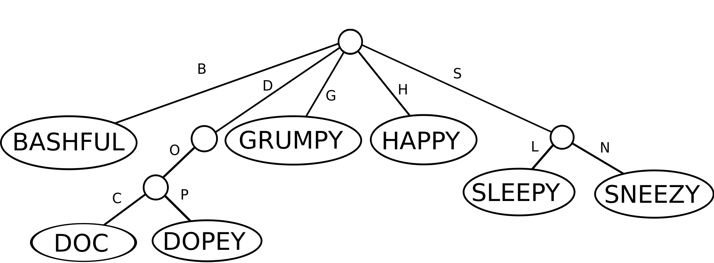

rust-lang.org
github.com/michaelsproul/rust_radix_trie
Michael Sproul

Rust is a low-level programming language like C++, with functional programming influences.
/// Insert the given key-value pair, returning any previous value associated with the key. pub fn insert(&mut self, key: K, value: V) -> Option<V> { let key_fragments = NibbleVec::from_byte_vec(key.encode()); let result = self.root.insert(key, value, key_fragments); if result.is_none() { self.length += 1; } result }
Ownership is RAII and std::auto_ptr perfected.
In a tree-like data-structure, parents own their children...
enum DeleteAction<K, V> { Replace(Box<TrieNode<K, V>>), Delete, DoNothing }
// Recurse down the Trie working out what to do. let (value, delete_action) = match self.children[bucket] { None => (None, DoNothing), Some(box ref mut existing_child) => // Do stuff... }; // Apply the computed delete action. match delete_action { Replace(node) => { self.children[bucket] = Some(node); (value, DoNothing) } // More cases... }
Rust does well against Go and Haskell.
| # Words | Rust | Haskell | Go |
|---|---|---|---|
| 226 | 0.14 ms | 0.11 ms | 0.29 ms |
| 103,366 | 90 ms | 413 ms | 60 ms |
Shown: time for all words to be inserted.